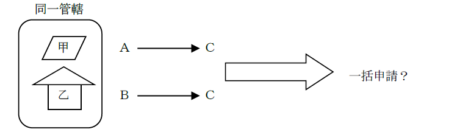
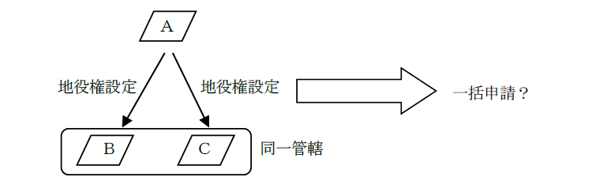
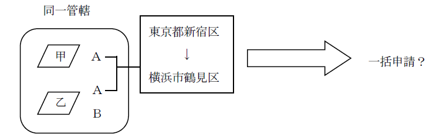
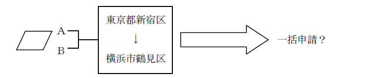
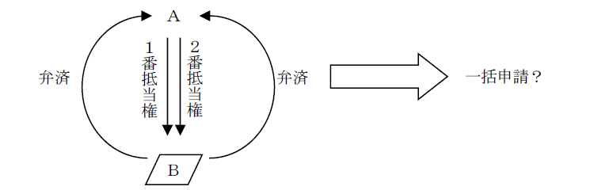
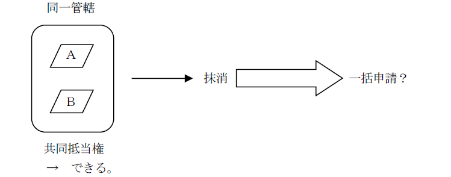
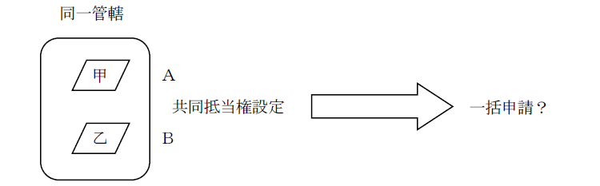
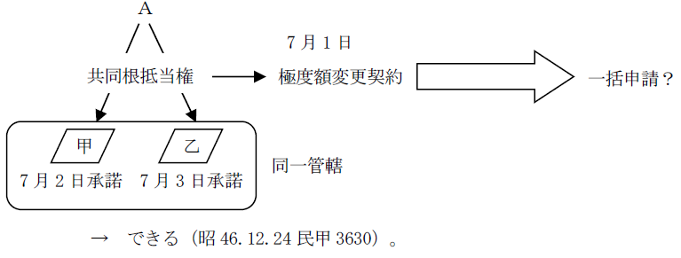
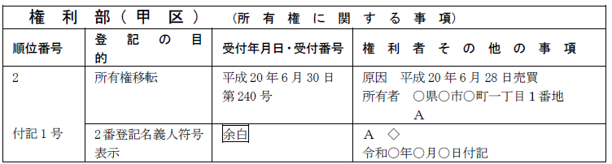

第２編 総 論
第２章 申請手続全般
第５節 一の申請情報による申請
登記の申請は、過誤を防止するために、1個の不動産に関する1個の権利につき一つの申請情報をもってすることが、原則である（不登令4条本文。一件一申請書主義）。
しかし、申請人の負担の軽減と登記事務の迅速処理のため、一定の要件の下に、一つの申請情報をもって数個の不動産に関する登記を申請することや、1個の不動産に関する数個の登記について一つの申請情報で申請することが認められている（不登令4条ただし書）。
1. 同一の登記所の管轄区域内にある2以上の不動産について申請する登記の目的並びに登記原因及びその日付が同一であるとき（不登令4条ただし書）
(1) 要件
①数個の不動産について管轄登記所が同一であること
②登記の目的が同一であること
③登記原因及びその日付が同一であること
「登記原因が同一である」とは、申請人が同一であることも含む。
(2) 具体例
(a) 一括申請できる場合
①同一の登記所の管轄区域内にあるＡ所有の甲土地と乙土地について、Ｂに対して同一の登記原因をもって所有権移転登記を申請する場合や、共同抵当権を設定する場合には、一の申請情報によって申請することができる。
なお、甲土地については登記識別情報を提供できるが、乙土地については登記識別情報を提供することができないために事前通知による手続を利用して申請する場合であっても、一の申請情報によって申請することができる（昭37.4.19民甲1173）。
②契約解除を登記原因とする所有権の移転の仮登記の抹消の登記の申請と当該仮登記に基づく所有権の移転の本登記の抹消の申請は、一の申請情報によってすることができる（昭36.5.8民甲1053）。
登記の目的：「○番所有権本登記及び仮登記抹消」
③同一当事者間で、一つの契約によってされた同一の登記所の管轄区域内にある複数の不動産についての賃借権の設定の登記の申請は、不動産ごとに賃料が異なるときであっても、一の申請情報によってすることができるか？
→ できる（昭54.4.4民3電信回答参照）。登記事項の内容まで同一であるということは、要求されていないからである。
(b) 一括申請できない場合
①同一の登記所の管轄区域内にあるＡ所有の甲土地とＢ所有の乙建物を同時にＣが買い受けた場合、登記原因日付が同一である売買を原因とする所有権移転登記をするときは一の申請情報によって申請することはできない（明33.8.21民刑1176）。登記義務者が異なるため、登記原因が同一とはいえないからである。

②一筆の土地を要役地とし、それぞれ所有者を異にする同一の登記所の管轄区域内にある複数の土地を承役地とする地役権の設定の登記の申請は、一の申請情報によってすることはできない（昭33.2.22民甲421）。登記義務者が異なるため、登記原因が同一とはいえないからである。

※ なお、一筆の土地を承役地とし、所有者の異なる数筆の土地を要役地とする地役権を設定した場合も、一の申請情報によって地役権の設定の登記を申請することはできない（登研522P.158）。要役地ごとに契約当事者が異なり、登記原因が同一とはいえないからである。
③所有者の異なる複数の不動産について、信託の登記を一の申請情報によって申請することはできない。申請人が異なるため、一括申請の要件（不登令4条ただし書、不登規35条参照）を満たさないからである。
2. 同一の登記所の管轄区域内にある1又は2以上の不動産について申請する2以上の登記が、いずれも同一の登記名義人の氏名若しくは名称又は住所についての変更の登記又は更正の登記であるとき（不登規35条8号）
(1) 要件
①数個の不動産について管轄登記所が同一であること
②1又は2以上の不動産についての2以上の登記であること
③同一の登記名義人の氏名等の変更・更正の登記であること
(2) 具体例
①甲土地の所有者Ａについて、離婚を原因とする氏名変更登記と、錯誤を原因とする住所更正登記を一の申請情報によって申請することができるか？
→できる（昭42.7.26民3.794参照）。
②同一の登記所の管轄区域内に、Ａ単有名義の甲土地とＡＢ共有名義の乙土地とがある場合において、Ａが住所を移転した場合の、甲土地の所有権及び乙土地のＡ持分について申請する登記名義人の住所についての変更の登記は、一の申請情報によって申請することができるか？

→ できる（登研360P.92）。
この場合、目的及び変更後の事項は、以下のように記載する。
「目的 所有権登記名義人住所変更」
「変更後の事項 所有者及び共有者Ａの住所 横浜市鶴見区…」
③登記記録上の住所が同一である共有者が、同時に同一の住所に移転した 場合には、当該共有者である登記名義人の住所についての変更の登記の申請は、一の申請情報によって申請することができるか？

→ できる（登研455P.91）。また、登記記録上の住所がそれぞれ甲及び乙である共有者Ａ及びＢが、同一の日付で丙へ住所を移転した場合は、登記の目的、登記原因、変更後の事項が同一であるため、便宜、同一の申請情報で登記名義人表示変更の登記を申請できる（登研575P.122）。
3. 同一の不動産について申請する2以上の権利に関する登記（上記(2)の登記を除く。）の登記の目的並びに登記原因及びその日付が同一であるとき（不登規35条9号）
(1) 要件
①同一不動産についての2以上の権利に関する登記であること
②登記の目的・登記原因及びその日付が同一であること
「登記原因が同一である」とは、申請人が同一であることも含む。
※管轄登記所についての要件がないのは、同一の不動産についての問題であるため、管轄登記所は同一であるに決まっているからである。
(2) 具体例
①一筆の土地に抵当権者を同じくする1番抵当権と2番抵当権が設定されている場合において、債務者が抵当権者に対して両抵当権の被担保債権を同時に弁済したときは、両抵当権の抹消登記の申請は、一の申請情報によって申請することができるか？

→ できる（昭10.9.16民甲946参照）。登記の目的・登記原因及びその日付が同一であるといえるからである。
なお、上記の事例で1番抵当権者と2番抵当権者が異なる場合には、両抵当権の抹消登記を一の申請情報によって申請することはできない（登研421P.107）。
4. 同一の登記所の管轄区域内にある2以上の不動産について申請する登記が、同一の債権を担保する先取特権、質権又は抵当権（根抵当権）に関する登記であって、登記の目的が同一であるとき（不登規35条10号）
(1) 要件
①数個の不動産について管轄登記所が同一であること
②2以上の不動産についての登記であること
③同一債権を担保する先取特権、質権又は抵当権に関する登記であること
④登記の目的が同一であること
(2) 具体例
①共同抵当の関係にある抵当権の登記を抹消する場合には、同一の登記所の管轄区域内にある目的不動産の所有者が異なるときであっても、一の申請情報によって申請することができるか？

→ できる。
②ある債権を担保するためにＡ名義の甲土地について抵当権の設定契約が締結され、その旨の登記未了のうちに、Ｂ名義の乙土地について同一の債権を担保するために抵当権の設定契約が締結された場合の、同一の登記所の管轄区域内にある甲土地及び乙土地について申請する抵当権の設定登記は、一の申請情報によって申請することができるか？

→ できる（昭39.3.7民甲588）。
③同一の登記所の管轄区域内にある甲・乙不動産を目的とする共同根抵当権の極度額変更契約が7月1日に締結されたが、利害関係人の承諾が甲不動産については7月2日に、乙不動産については7月3日にされた場合、当該極度額変更の登記の申請は、一の申請情報によって申請することができるか？

→ できる（昭46.12.24民甲3630）。
第３章 所有者不明土地等の防止の為の諸制度
不動産の登記記録は、1筆の土地又は1個の建物ごとに作成されるため（不登法2条5号）、特定の人物が所有する不動産を網羅的に把握することができず、相続が発生した場合には、相続登記をしないまま放置されるケースもあった。そこで、相続登記を促進し、所有者不明土地等の発生を防止するために、所有不動産記録証明制度が創設されることとなった。
なお、現在の登記記録に記録されている所有権の登記名義人の氏名又は名称及び住所は、最新の情報であるとは限らないため、不動産の網羅性については今後の課題となると考えられる。
1. 所有権の登記名義人本人による請求
何人も、登記官に対し、手数料を納付して、自らが所有権の登記名義人（これに準ずる者として法務省令で定めるものを含む。）として記録されている不動産に係る登記記録に記録されている事項のうち法務省令で定めるもの（記録がないときは、その旨）を証明した書面（以下「所有不動産記録証明書」という。）の交付を請求することができる（不登法119条の2第1項）。
ex.遺言をするために自身が所有する不動産を網羅的に把握したいと考えたＡが、所有不動産記録証明書の交付を請求する
2. 所有権の登記名義人の相続人等による請求
相続人その他の一般承継人は、登記官に対し、手数料を納付して、被承継人に係る所有不動産記録証明書の交付を請求することができる（不登法119条の2第2項）。
ex.不動産を所有するＡに相続が開始し、相続人Ｂが、被相続人Ａの所有していた不動産を確認するため、所有不動産記録証明書の交付を請求する
3. 対象
1.は所有権の登記名義人、2.は所有権の登記名義人の相続人その他の一般承継人が請求権者となる。自然人も法人も対象である。
1.及び2.に該当しない者が、特定の者の所有不動産記録証明書の交付を請求することはできない。プライバシーの侵害となるためである。
4. 手数料
登記事項証明書の交付請求と同様、手数料を納付して行う（不登法119条の2第4項、119条3項、同条4項）。
1. 意義
登記官は、自然人である所有権の登記名義人（不登規158条の42第1項）が権利能力を有しないこととなったと認めるべき場合として法務省令で定める次の(1)又は(2)の場合には、法務省令で定めるところにより、職権で、当該所有権の登記名義人についてその旨を示す符号を表示することができる（不登法76条の4）。
(1) 管轄登記所の登記官が関係行政機関の長その他の者から提供を受けた情報により、所有権の登記名義人が死亡し、又は失踪の宣告を受けたことを確認した場合（不登規158条の42第2項第1号）
(2) 不登規158条の43の規定による通知があった場合（不登規158条の42第2項第2号）
（※）第158条の39第5項：検索用情報同時申出があり検索用情報同時申出に係る申請に基づく登記をしたときに職権でする検索用情報管理ファイルへの記録
第158条の40第17項：検索用情報単独申出があったときに職権でする検索用情報管理ファイルへの記録
2. 趣旨
不動産の所有権の登記名義人が死亡しても、相続登記がされなければ登記記録から所有権の登記名義人の死亡を確認できないことに関して、土地開発事業等の候補地の選定等の為に所有権の登記名義人の相続開始の事実を公示する要請があったことから、死亡についての符号の表示の規定が創設された。
3. 対象
自然人に限る（不登規158条の42第1項）。自然人の相続開始については、戸籍謄本等から情報を収集する必要があり、情報へのアクセスが困難である。これに対し、法人の解散や清算結了には登記申請義務があり、法人の登記事項証明書は誰でも取得ができるため、自然人についての表示が優先された。
もっとも、将来的には、法人にも同様の仕組みが設けられる可能性はある。
4. 登記官による死亡等の事実の確認方法
法定相続分での相続登記等の申請又は嘱託（以下「申請等」という。）の審査の過程において、当該申請等の添付情報として提供された戸籍謄本等の記載から、当該申請等による登記によって所有権の登記名義人となる者が死亡し、又は失踪の宣告を受けたことを確認した場合（当該申請等と同時にされた申請等により当該所有権の登記名義人となる者が所有権の登記名義人でなくなるときを除く。）が上記1.(1)に該当する（令8.3.27民二525）。
登記官が職権による住所変更登記（スマート変更登記。不登法76条の6）の事務の過程で住基ネット情報により所有権の登記名義人の死亡したこと等を把握し、かつ、戸籍等に記録されている情報の照会結果から当該所有権の登記名義人が死亡し、又は失踪宣告を受けたことを確認した場合が上記1.(2)に該当する（令8.3.27民二525）。
5. 効果
死亡情報についての符号の表示をすることにより、登記事項証明書を見れば、その不動産の所有権の登記名義人の死亡の事実がわかることとなる。
【死亡情報についての符号の表示の記録例】 （令8.3.27民二525）

1. 意義
登記官は、職権による登記をし、又は第14条1項の地図を作成するために必要な限度で、関係地方公共団体の長その他の者に対し、その対象となる不動産の所有者等（所有権が帰属し、又は帰属していた自然人又は法人（法人でない社団又は財団を含む。）をいう。）に関する情報の提供を求めることができる（不登法151条）。
2. 趣旨
所有者不明土地等の発生の防止のために規定された「登記官の職権でする住所等のスマート変更登記」（不登法76条の6）や「登記官の職権でする死亡情報についての符号の表示」（不登法76条の4）を実現するために規定された。
1. 意義
表題部所有者、登記名義人又はその他の者について相続が開始した場合において、当該相続に起因する登記その他の手続のために必要があるときは、その相続人又は当該相続人の地位を相続により承継した者は、被相続人の本籍地若しくは最後の住所地、申出人の住所地又は被相続人を表題部所有者若しくは所有権の登記名義人とする不動産の所在地を管轄する登記所の登記官に対し、法定相続情報（次のⅰ及びⅱ）を記載した書面（法定相続情報一覧図）の保管及び法定相続情報一覧図の写しの交付の申出をすることができる（不登規247条1項）。
ⅰ 被相続人の氏名、生年月日、最後の住所及び死亡の年月日
ⅱ 相続開始の時における同順位の相続人の氏名、生年月日及び被相続人との続柄
相続手続にかかる相続人及び手続機関双方の負担の軽減や、相続登記の促進のための制度である。
2. 申出の手続
(1) 申出の方法
相続人（数次相続により相続人となる者を含む。）またはその代理人が、管轄登記所に対して申出書及び必要書類を提供し、申出をすることにより行う（不登規247条1項）。申出は郵送によることもできる。
(2) 管轄登記所
法定相続情報一覧図の保管及び法定相続情報一覧図の写しの交付の申出は、被相続人の本籍地若しくは最後の住所地、申出人の住所地又は被相続人を表題部所有者若しくは所有権の登記名義人とする不動産の所在地を管轄する登記所の登記官に対して行う（不登規247条1項）。
(3) 申出書の記載事項（不登規247条2項）
ⅰ 申出人の氏名、住所、連絡先及び被相続人との続柄
ⅱ 代理人（申出人の法定代理人又はその委任による代理人にあってはその親族若しくは戸籍法10条の2第3項に掲げる者に限る。）によって申出をするときは、当該代理人の氏名又は名称、住所及び連絡先並びに代理人が法人であるときはその代表者の氏名
ⅲ 利用目的
ⅳ 交付を求める通数
ⅴ 被相続人を表題部所有者又は所有権の登記名義人とする不動産があるときは、不動産所在事項又は不動産番号
ⅵ 申出の年月日
ⅶ 送付の方法により法定相続情報一覧図の写しの交付及び不登規247条6項の規定による書面の返却を求めるときは、その旨
(4) 添付書面
上記(3)の申出書には、次に掲げる書面を添付しなければならない（不登規247条3項）。
ⅰ 法定相続情報一覧図（法定相続情報及び作成の年月日を記載し、申出人が記名するとともに、その作成をした申出人又はその代理人が記名したものに限る。）
ⅱ 被相続人（代襲相続がある場合には、被代襲者を含む。）の出生時からの戸籍及び除かれた戸籍の謄本又は全部事項証明書
ⅲ 被相続人の最後の住所を証する書面
被相続人に係る住民票の除票や戸籍の附票がこれに当たる（平29.4.17民二.292）。
ⅳ 相続開始の時における同順位の相続人の相続人の戸籍の謄本、抄本又は記載事項証明書
ⅴ 申出人が相続人の地位を相続により承継した者であるときは、これを証する書面
ⅵ 申出書に記載されている申出人の氏名及び住所と同一の氏名及び住所が記載されている市町村長その他の公務員が職務上作成した証明書（当該申出人が原本と相違がない旨を記載した謄本を含む。）
ⅶ 代理人によって申出をするときは、当該代理人の権限を証する書面
ⅷ （法定相続情報一覧図に相続人の住所を記載した場合）
住所を証する書面（不登規247条4項）
相続人の住所は、法定相続情報一覧図の任意的記載事項であるため、相続人の住所の記載がない場合は、添付不要である（平29.4.17民二.292）。
3. 法定相続情報一覧図の写しの利用方法
(1) 登記関係
(a) 「相続があったことを証する情報」としての利用
表題部所有者又は登記名義人の相続人が登記の申請をする場合において、その相続に関して法定相続情報一覧図の写し又は法定相続情報番号（11桁の番号であって、当該法定相続情報一覧図を識別するために登記官が付したものをいう。）を提供したときは、当該法定相続情報一覧図の写し又は当該法定相続情報番号の提供をもって、相続があったことを証する市町村長その他の公務員が職務上作成した情報の提供に代えることができる（不登規37条の3第1項本文）。
(b) 「住所を証する情報」としての利用
表題部所有者の相続人が所有権の保存の登記の申請をする場合又は登記名義人の相続人が相続による権利の移転の登記の申請をする場合において、当該相続人の住所が記載された法定相続情報一覧図の写し又は法定相続情報番号（法定相続情報一覧図に当該相続人の住所が記載されている場合に限る。）を提供したときは、当該法定相続情報一覧図の写し又は当該法定相続情報番号の提供をもって、登記名義人となる者の住所を証する市町村長その他の公務員が職務上作成した情報の提供に代えることができる（不登規37条の3第2項本文、平30.3.29民二.166）。なお、一覧図への相続人の住所の記載は任意である。
※(a) (b)いずれの場合も、法定相続情報番号を提供する場合にあっては、登記官が法定相続情報（不登規247条1項）を確認することができるときに限る（不登規37条の3第1項ただし書、同条第2項ただし書）。
(c) 具体的な利用場面
具体的には、相続による権利の移転の登記（63条2項）、所有権保存の登記（74条1項1号）、権利の変更等の登記（66条、債務者の相続等）、相続人である旨の申出（76条の3第1項、不登規158条の20）、登記識別情報の失効の申出（不登規65条1項）、登記識別情報に関する証明（不登規68条1項）等に利用することができる。
一覧図の申出の際に相続人の戸籍謄本等を添付しており（不登規247条3項4号）、廃除された旨は当該戸籍等に記載されるため、登記申請の際に法定相続情報一覧図の写しを提供すれば、廃除された旨の記載のある戸籍を提供する必要はない。
もっとも、一覧図の写し及び法定相続情報番号はあくまで相続があったことを証する市町村長その他の公務員が職務上作成した情報を代替するものであり、遺産分割協議書や相続放棄申述受理証明書等までをも代替するものではない（平29.4.17民二.292、令6.3.21民二.569）。
(2) 登記手続以外
法定相続情報一覧図の写しは、被相続人の預貯金の払戻し、相続税の申告手続、年金等の手続で利用することができる。